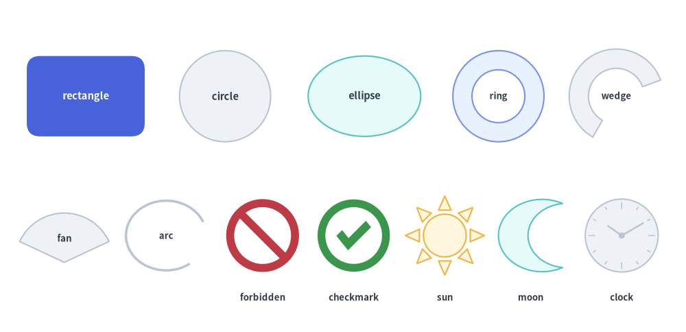
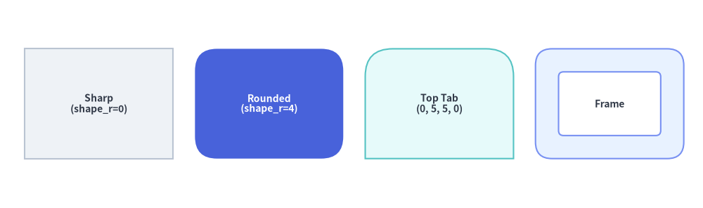
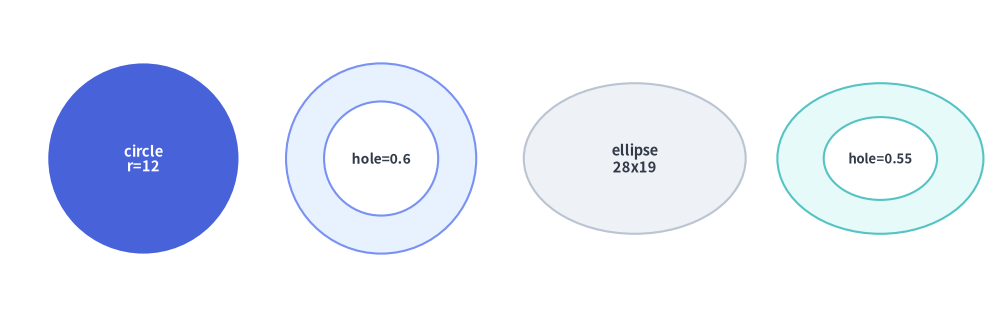
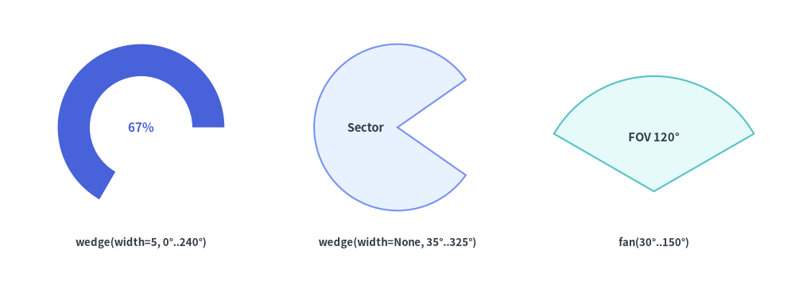
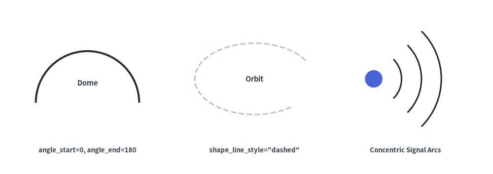

Basic & Radial Shapes
The Basic & Radial category of drawlib.shapes provides the 6 foundational geometric primitives used across nearly every technical diagram: rectangular cards and frames (rectangle), circles and rings (circle), ellipses (ellipse), annular ring slices and pie wedges (wedge), circular pie sectors (fan), and open elliptical strokes (arc).

Source Code
from drawlib.canvas import save, setup
from drawlib.shapes import arc, circle, ellipse, fan, rectangle, wedge
from drawlib.styles import Styles
from drawlib.text import text
setup(width=128, height=58)
lbl_dark = Styles.DarkBold.patch(text_size=10.5)
lbl_white = Styles.WhiteBold.patch(text_size=10.5)
cap_st = Styles.DarkBold.patch(text_size=9.5)
# Row 1: rectangle, circle, ellipse, and hollow ring (hole_ratio)
rectangle(
(19, 41),
width=26,
height=16,
style=Styles.PrimaryFlat.patch(shape_r=3.0),
text="rectangle",
text_style=lbl_white,
)
circle((51, 41), radius=9.0, style=Styles.Neutral, text="circle", text_style=lbl_dark)
ellipse((83, 41), width=25, height=16, style=Styles.SecondaryNeutral, text="ellipse", text_style=lbl_dark)
circle(
(113, 41),
radius=9.0,
hole_ratio=0.58,
style=Styles.PrimaryNeutral,
text="ring",
text_style=cap_st,
)
# Row 2: wedge (donut slice), wedge (full sector), fan (FOV pie), arc (open stroke)
wedge(
(22, 16),
radius=9.5,
width=3.8,
angle_start=20,
angle_end=250,
style=Styles.PrimaryFlat,
text="wedge",
text_style=cap_st,
)
text((22, 3.5), "wedge (width=3.8)", style=cap_st)
wedge(
(54, 16),
radius=9.5,
width=None,
angle_start=30,
angle_end=310,
style=Styles.PrimaryNeutral,
text="sector",
text_style=cap_st.patch(xy_shift=(-4.0, 0)),
)
text((54, 3.5), "wedge (width=None)", style=cap_st)
fan(
(84, 10),
radius=12.5,
angle_start=30,
angle_end=150,
style=Styles.SecondaryNeutral,
text="fan",
text_style=Styles.DarkBold.patch(text_size=10.0, xy_shift=(0, 6.0)),
)
text((84, 3.5), "fan (30°..150°)", style=cap_st)
arc(
(112, 16),
width=20,
height=15,
angle_start=20,
angle_end=320,
style=Styles.DarkBold.patch(shape_line_style="dashed"),
text="arc",
text_style=cap_st,
)
text((112, 3.5), "arc (open stroke)", style=cap_st)
save()
1. Quick Comparison of Basic & Radial Shapes
| Function | Required Geometry Args | Optional Geometry Args | Supports hole_ratio |
Supports shape_r |
Typical Diagram Use Cases |
|---|---|---|---|---|---|
rectangle |
xy, width, height |
hole_ratio=None |
Yes (0.0, 1.0) |
Scalar float or 4-tuple (bl, tl, tr, br) |
Service cards, containers, swimlanes, UI panels, tabs, and hollow frames. |
circle |
xy, radius |
hole_ratio=None |
Yes (0.0, 1.0) |
— | State nodes, endpoints, numbered badges, and hollow annular rings. |
ellipse |
xy, width, height |
hole_ratio=None |
Yes (0.0, 1.0) |
— | Use-case ovals, Venn diagrams, orbital rings, and wide pill nodes. |
wedge |
xy, radius |
width=None, angle_start=0, angle_end=360 |
Via width |
— | Gauge meters, donut slices (width set), or circular sectors (width=None). |
fan |
xy, radius |
angle_start=0, angle_end=180 |
— | — | Camera/radar field-of-view (FOV) cones, wireless coverage sectors, pie wedges. |
arc |
xy, width, height |
angle_start=0.0, angle_end=360.0 |
— (Unfilled) | — | Open circular/elliptical trajectory strokes, partial borders, and wave fronts. |
2. Rectangles, Per-Corner Rounding & Hollow Frames (rectangle)
rectangle draws a sharp, rounded, or hollow rectangular card centered at xy (when using preset Styles.*):
rectangle(
xy: tuple[float, float],
width: float,
height: float,
*,
hole_ratio: float | None = None,
style: Style,
text: str = "",
text_style: Style | None = None,
) -> None
Parameter & Style Reference
| Parameter / Style Field | Type | Default | Description |
|---|---|---|---|
xy |
tuple[float, float] |
Required | Anchor coordinate (x, y) (center by default; customizable via style.halign / style.valign). |
width |
float |
Required | Horizontal width in canvas units (> 0). |
height |
float |
Required | Vertical height in canvas units (> 0). |
hole_ratio |
float | None |
None |
Optional concentric rectangular cutout ratio in (0.0, 1.0). Creates a hollow rectangular frame of wall thickness (1 - hole_ratio) / 2 along both axes. |
style.shape_r |
float | tuple[float, float, float, float] | None |
None |
Corner fillet radius. Pass a scalar float to round all 4 corners equally, or a 4-tuple (bottom_left, top_left, top_right, bottom_right) to round specific corners selectively. Automatically clamped to min(width, height) / 2. |
style.angle |
float |
0.0 |
Counterclockwise rotation angle in degrees around the rectangle's center. |
text / text_style |
str / Style | None |
"" / None |
Embedded text label centered inside the rectangle and optional typography override. |
Corner Rounding & Hollow Frame Rules
- 4-Tuple Corner Order (
(bl, tl, tr, br)): When passing a 4-tuple tostyle.patch(shape_r=...), the four radii correspond to(bottom_left, top_left, top_right, bottom_right):- Top Header Tab:
shape_r=(0, 4, 4, 0)rounds only the top-left and top-right corners. - Bottom Footer Bar:
shape_r=(4, 0, 0, 4)rounds only the bottom-left and bottom-right corners. - Left Sidebar Tab:
shape_r=(4, 4, 0, 0)rounds only the left corners.
- Top Header Tab:
- Hollow Frame +
shape_r: When bothhole_ratioandstyle.shape_rare set, the inner cutout rectangle automatically scales its corner radii byhole_ratioso the frame maintains smooth concentric curvature.
from drawlib.canvas import save, setup
from drawlib.shapes import rectangle
from drawlib.styles import Styles
setup(width=128, height=38)
# 1. Sharp-cornered neutral card
rectangle(
(18, 19),
width=27,
height=20,
style=Styles.Neutral,
text="Sharp\n(shape_r=0)",
text_style=Styles.DarkBold.patch(text_size=10.0),
)
# 2. Uniform rounded hero card
rectangle(
(49, 19),
width=27,
height=20,
style=Styles.PrimaryFlat.patch(shape_r=4),
text="Rounded\n(shape_r=4)",
text_style=Styles.WhiteBold.patch(text_size=10.0),
)
# 3. Per-corner rounded tab (top-left and top-right rounded)
rectangle(
(80, 19),
width=27,
height=20,
style=Styles.SecondaryNeutral.patch(shape_r=(0, 5, 5, 0)),
text="Top Tab\n(0, 5, 5, 0)",
text_style=Styles.DarkBold.patch(text_size=10.0),
)
# 4. Hollow rectangular frame (hole_ratio=0.58)
rectangle(
(111, 19),
width=27,
height=20,
hole_ratio=0.58,
style=Styles.PrimaryNeutral.patch(shape_r=3),
text="Frame",
text_style=Styles.DarkBold.patch(text_size=10.0),
)
save()

3. Circles, Ellipses & Hollow Rings (circle, ellipse)
circle and ellipse draw smooth circular and oval primitives, with native support for concentric ring cutouts via hole_ratio:
circle(
xy: tuple[float, float],
radius: float,
*,
hole_ratio: float | None = None,
style: Style,
text: str = "",
text_style: Style | None = None,
) -> None
ellipse(
xy: tuple[float, float],
width: float,
height: float,
*,
hole_ratio: float | None = None,
style: Style,
text: str = "",
text_style: Style | None = None,
) -> None
| Function | Parameter | Type | Default | Description |
|---|---|---|---|---|
circle |
xy |
tuple[float, float] |
Required | Exact center coordinate (cx, cy) of the circle (circle is always center-anchored). |
radius |
float |
Required | Outer radius of the circle (> 0, total diameter = 2 * radius). |
|
hole_ratio |
float | None |
None |
Concentric inner hole ratio in (0.0, 1.0). Inner radius = radius * hole_ratio. |
|
ellipse |
xy |
tuple[float, float] |
Required | Anchor coordinate (x, y) (center by default; supports style.halign / style.valign). |
width / height |
float |
Required | Full horizontal diameter (width > 0) and vertical diameter (height > 0). |
|
hole_ratio |
float | None |
None |
Concentric elliptical cutout ratio in (0.0, 1.0) with inner axes (width * hole_ratio, height * hole_ratio). |
|
style.angle |
float |
0.0 |
Counterclockwise rotation angle of the ellipse axes in degrees. |
from drawlib.canvas import save, setup
from drawlib.shapes import circle, ellipse
from drawlib.styles import Styles
setup(width=126, height=40)
# 1. Solid focal circle
circle(
(18, 20),
radius=12,
style=Styles.PrimaryFlat,
text="circle\nr=12",
text_style=Styles.WhiteBold.patch(text_size=10.5),
)
# 2. Hollow circular ring (hole_ratio=0.6)
circle(
(48, 20),
radius=12,
hole_ratio=0.6,
style=Styles.PrimaryNeutral,
text="hole=0.6",
text_style=Styles.DarkBold.patch(text_size=10.0),
)
# 3. Solid ellipse
ellipse(
(80, 20),
width=28,
height=19,
style=Styles.Neutral,
text="ellipse\n28x19",
text_style=Styles.DarkBold.patch(text_size=10.5),
)
# 4. Hollow elliptical ring (hole_ratio=0.55)
ellipse(
(111, 20),
width=26,
height=19,
hole_ratio=0.55,
style=Styles.SecondaryNeutral,
text="hole=0.55",
text_style=Styles.DarkBold.patch(text_size=9.5),
)
save()

4. Angular Sectors, Donut Slices & Pie Fans (wedge, fan)
wedge and fan draw circular angular sectors swept counterclockwise from angle_start to angle_end (in degrees, where $0^\circ$ points right along $+X$, $90^\circ$ points up along $+Y$, $180^\circ$ points left along $-X$, and $270^\circ$ points down along $-Y$):
wedge(
xy: tuple[float, float],
radius: float,
*,
style: Style,
width: float | None = None,
angle_start: float = 0,
angle_end: float = 360,
text: str = "",
text_style: Style | None = None,
) -> None
fan(
xy: tuple[float, float],
radius: float,
*,
style: Style,
angle_start: float = 0,
angle_end: float = 180,
text: str = "",
text_style: Style | None = None,
) -> None
| Parameter | Type | Default | Description |
|---|---|---|---|
xy |
tuple[float, float] |
Required | Center coordinate (cx, cy) of the underlying circle (apex of the sector). |
radius |
float |
Required | Outer radius of the circular arc (> 0). |
width (on wedge) |
float | None |
None |
Radial wall thickness of the annular ring slice (0 < width <= radius), so the inner arc radius is radius - width. When None, wedge draws a solid pie sector all the way to xy. |
angle_start |
float |
0 |
Starting angle in degrees counterclockwise from $+X$. |
angle_end |
float |
360 (wedge) / 180 (fan) |
Ending angle in degrees counterclockwise from $+X$. |
style.angle |
float |
0.0 |
Additional rotation offset in degrees added to both angle_start and angle_end. |
text / text_style |
str / Style | None |
"" / None |
Label anchored at xy by default. For narrow fan cones, use text_style.patch(xy_shift=(dx, dy)) to place the label inside the sector body. |
from drawlib.canvas import save, setup
from drawlib.shapes import fan, wedge
from drawlib.styles import Styles
from drawlib.text import text
setup(width=124, height=44)
lbl = Styles.DarkBold.patch(text_size=9.5)
# 1. Angular donut slice (wedge with wall thickness width=5)
wedge(
(22, 24),
radius=13,
width=5,
angle_start=0,
angle_end=240,
style=Styles.PrimaryFlat,
text="67%",
text_style=Styles.PrimaryBold.patch(text_size=11.0),
)
text((22, 6), "wedge(width=5, 0°..240°)", style=lbl)
# 2. Solid circular sector (wedge with width=None)
wedge(
(62, 24),
radius=13,
width=None,
angle_start=35,
angle_end=325,
style=Styles.PrimaryNeutral,
text="Sector",
text_style=Styles.DarkBold.patch(text_size=10.5, xy_shift=(-5.0, 0)),
)
text((62, 6), "wedge(width=None, 35°..325°)", style=lbl)
# 3. Circular pie sector (fan from 30° to 150°)
fan(
(102, 14),
radius=18,
angle_start=30,
angle_end=150,
style=Styles.SecondaryNeutral,
text="FOV 120°",
text_style=Styles.DarkBold.patch(text_size=10.5, xy_shift=(0, 8.5)),
)
text((102, 6), "fan(30°..150°)", style=lbl)
save()

5. Open Elliptical & Circular Arcs (arc)
arc draws an open, unfilled vector stroke along the perimeter of an ellipse or circle between angle_start and angle_end:
arc(
xy: tuple[float, float],
width: float,
height: float,
*,
style: Style,
angle_start: float = 0.0,
angle_end: float = 360.0,
text: str = "",
text_style: Style | None = None,
) -> None
| Parameter | Type | Default | Description |
|---|---|---|---|
xy |
tuple[float, float] |
Required | Center coordinate (x, y) of the underlying ellipse (supports style.halign / style.valign). |
width |
float |
Required | Full horizontal diameter of the ellipse (> 0). Set width == height for a circular arc. |
height |
float |
Required | Full vertical diameter of the ellipse (> 0). |
angle_start / angle_end |
float |
0.0 / 360.0 |
Counterclockwise start and end angles in degrees. |
style |
Style |
Required | Stroke appearance is controlled by shape_line_color (or line_color), shape_line_width (or line_width), shape_line_style ("solid", "dashed", "dotted", "dashdot"), and angle (rotates the entire ellipse frame). |
text / text_style |
str / Style | None |
"" / None |
Optional text label centered at xy. |
from drawlib.canvas import save, setup
from drawlib.shapes import arc, circle
from drawlib.styles import Styles
from drawlib.text import text
setup(width=124, height=44)
lbl = Styles.DarkBold.patch(text_size=9.5)
# 1. Upper semicircle dome arc (0° to 180°)
arc(
(22, 18),
width=26,
height=26,
angle_start=0,
angle_end=180,
style=Styles.PrimaryBold.patch(shape_line_width=2.8),
text="Dome",
text_style=Styles.DarkBold.patch(text_size=10.5, xy_shift=(0, 5)),
)
text((22, 6), "angle_start=0, angle_end=180", style=lbl)
# 2. Dashed elliptical orbit (20° to 325°)
arc(
(64, 24),
width=30,
height=18,
angle_start=20,
angle_end=325,
style=Styles.DarkBold.patch(shape_line_style="dashed", shape_line_width=2.2),
text="Orbit",
text_style=Styles.DarkBold.patch(text_size=10.5),
)
text((64, 6), 'shape_line_style="dashed"', style=lbl)
# 3. Concentric wireless signal wave fronts (-45° to 45°)
circle((94, 24), radius=2.2, style=Styles.PrimaryFlat)
for r_diam in (14, 24, 34):
arc(
(94, 24),
width=r_diam,
height=r_diam,
angle_start=-45,
angle_end=45,
style=Styles.PrimaryBold.patch(shape_line_width=2.2),
)
text((102, 6), "Concentric Signal Arcs", style=lbl)
save()

[!TIP]
- To draw curved arc connectors with terminal arrowheads (
arrow_head="->"), useline_arc()orline_curved()in Lines & Connectors, or 2D filled blockarrow_arc()in Block Arrows & Chevrons.- For multi-sided polygons (
triangle,parallelogram,trapezoid,rhombus,regularpolygon,star,plaque) and custom Bézier paths (polygon,shape), see Polygons & Custom Paths.